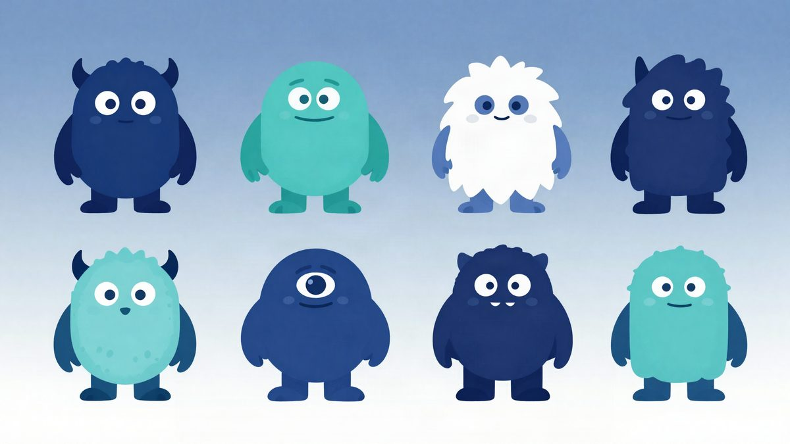

Vijesti iz svijeta tehnologije, na hrvatskom
Umjetna inteligencija, programiranje, kibernetička sigurnost, gadgeti i svemir. Svaku vijest pregleda i odobri urednik, a izvor je uvijek naveden.
Apple Inteligencija. Manje od 30 gigabajta u ime budućnosti (koju nismo tražili)
Apple je obećao učiniti naše uređaje pametnijima, ali je umjetna inteligencija zauzela više prostora nego što smo očekivali. Iako je Apple Intelligence predstavljena s puno obećanja, korisnici se suočavaju s problemima vezanim uz kapacitet pohrane i stvarnu funkcionalnost.

67 logičkih pogrešaka
Ovaj članak istražuje različite logičke pogreške koje se često javljaju u komunikaciji. Kroz primjere iz svakodnevnog života i radnog okruženja, čitatelji mogu naučiti kako prepoznati i reagirati na ove pogreške kako bi poboljšali svoje argumentacijske vještine.
Praćenje podataka o podrijetlu
Članak istražuje koncept 'Data Lineage', odnosno trag podataka od njihovog izvora do korištenja. Autor objašnjava složenost definicije i implementacije, ističući važnost korištenja usmjerenih acikličnih grafova za praćenje transformacija podataka.
Moj agent dobio visoku ocjenu. Provjeravam što je učinio
U ovom članku istražujem kako provjeriti učinkovitost dijalognog agenta koji je dobio visoku ocjenu na benchmarku. Kroz analizu različitih testova i mjerenja, otkrivam nedostatke i greške koje su utjecale na rezultate agenta.
Nema članaka za tu pretragu.